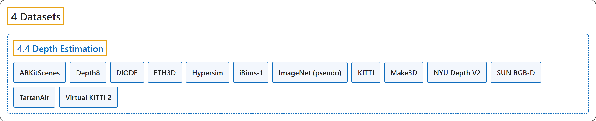

4.4 Depth Estimation
Classification

Glossary
| Term | Definition | 中文翻译 | Source |
|---|---|---|---|
| 4.4 Depth Estimation 深度估计数据集 |
(context) "Monocular depth estimation assigns a depth value in meters to every pixel in an image." | （语境）单目深度估计给图像中的每个像素分配一个以米为单位的深度值。 | Ultralytics, n.d.-b, "Depth Estimation Datasets Overview", para. 1 |
| ARKitScenes ARKitScenes |
"ARKitScenes is a large-scale real-world indoor RGB-D dataset captured with Apple's ARKit on iPad Pro devices equipped with a LiDAR scanner." | ARKitScenes 是一个大规模真实室内 RGB-D 数据集，用苹果 ARKit 在配备激光雷达扫描仪的 iPad Pro 上采集。 | Ultralytics, n.d.-a, "ARKitScenes Depth Dataset", para. 1 |
| Depth8 Depth8 |
"The Ultralytics Depth8 dataset is a compact monocular depth estimation dataset with 8 images sampled from the SUN RGB-D dataset: 4 for training and 4 for validation, drawn from its Kinect v1 and Kinect v2 captures (two per sensor in each split) for dense, artifact-free ground-truth depth maps." | Ultralytics Depth8 数据集是一个紧凑的单目深度估计数据集，含从 SUN RGB-D 数据集中抽取的 8 张图像：4 张训练，4 张验证，取自 Kinect v1 和 Kinect v2 的采集（每个划分中每种传感器各两张），以获得稠密、无伪影的真值深度图。 | Ultralytics, n.d.-c, "Depth8 Dataset", para. 1 |
| DIODE DIODE |
"DIODE (Dense Indoor/Outdoor DEpth) is a real-world dataset with very high-quality dense depth ground truth captured by a FARO Focus survey-grade laser scanner." | DIODE（稠密室内/室外深度）是一个真实世界数据集，带有用 FARO Focus 测绘级激光扫描仪采集的高质量稠密深度真值。 | Ultralytics, n.d.-d, "DIODE Depth Dataset", para. 1 |
| ETH3D ETH3D |
"ETH3D is a high-resolution multi-view-stereo benchmark used for monocular depth estimation." | ETH3D 是一个用于单目深度估计的高分辨率多视图立体基准。 | Ultralytics, n.d.-e, "ETH3D Depth Dataset", para. 1 |
| Hypersim Hypersim |
"Hypersim is a photorealistic synthetic dataset of indoor scenes designed for holistic indoor scene understanding." | Hypersim 是一个逼真的室内场景合成数据集，用于整体的室内场景理解。 | Ultralytics, n.d.-f, "Hypersim Depth Dataset", para. 1 |
| iBims-1 iBims-1 |
(context) "iBims-1 is a zero-shot evaluation benchmark for the YOLO26-Depth family; the published models are not trained on it." | （语境）iBims-1 是 YOLO26-Depth 系列的零样本评估基准；已发布的模型没有在它上面训练。 | Ultralytics, n.d.-g, "iBims-1 Depth Dataset", para. 1 |
| ImageNet (pseudo) ImageNet（伪标签） |
"The ImageNet (pseudo-labeled depth) dataset reuses the 1,281,167 ImageNet-1K training images, which have no ground-truth depth, and pairs each image with a pseudo depth map produced by a Depth Anything 3 teacher, combining its monocular and metric checkpoints." | ImageNet（伪标签深度）数据集沿用 1,281,167 张没有深度真值的 ImageNet-1K 训练图像，并为每张图像配上由 Depth Anything 3 教师模型生成的伪深度图，结合了它的单目和度量检查点。 | Ultralytics, n.d.-h, "ImageNet (Pseudo-Labeled) Depth Dataset", para. 1 |
| KITTI KITTI 深度版 |
"The KITTI dataset is a real-world outdoor autonomous-driving benchmark captured from a moving vehicle in and around the city of Karlsruhe." | KITTI 数据集是一个真实室外自动驾驶基准，从在卡尔斯鲁厄市内及周边行驶的车辆上采集。 | Ultralytics, n.d.-i, "KITTI Depth Dataset", para. 1 |
| Make3D Make3D |
"Make3D is a classic outdoor benchmark for monocular depth estimation." | Make3D 是一个经典的室外单目深度估计基准。 | Ultralytics, n.d.-j, "Make3D Depth Dataset", para. 1 |
| NYU Depth V2 NYU Depth V2 |
"NYU Depth V2 is the standard indoor benchmark for monocular depth estimation." | NYU Depth V2 是单目深度估计的标准室内基准。 | Ultralytics, n.d.-k, "NYU Depth V2 Depth Dataset", para. 1 |
| SUN RGB-D SUN RGB-D |
"SUN RGB-D is a real-world indoor scene-understanding benchmark captured with four different RGB-D sensors: Intel RealSense, Asus Xtion, and Microsoft Kinect v1 and v2." | SUN RGB-D 是一个真实室内场景理解基准，用四种不同的 RGB-D 传感器采集：Intel RealSense、Asus Xtion，以及 Microsoft Kinect v1 和 v2。 | Ultralytics, n.d.-l, "SUN RGB-D Depth Dataset", para. 1 |
| TartanAir TartanAir |
"TartanAir is a large-scale synthetic dataset generated in the AirSim simulator." | TartanAir 是一个在 AirSim 仿真器中生成的大规模合成数据集。 | Ultralytics, n.d.-m, "TartanAir Depth Dataset", para. 1 |
| Virtual KITTI 2 Virtual KITTI 2 |
"Virtual KITTI 2 (vKITTI2) is a photorealistic synthetic recreation of the KITTI driving scenes." | Virtual KITTI 2（vKITTI2）是对 KITTI 驾驶场景的逼真合成重建。 | Ultralytics, n.d.-n, "Virtual KITTI 2 Depth Dataset", para. 1 |
References
Ultralytics. (n.d.-a). ARKitScenes Depth Dataset. Ultralytics YOLO Docs (ultralytics 8.4.194). Retrieved October 31, 2026, from https://docs.ultralytics.com/datasets/depth/arkitscenes/
Ultralytics. (n.d.-b). Depth Estimation Datasets Overview. Ultralytics YOLO Docs (ultralytics 8.4.194). Retrieved October 31, 2026, from https://docs.ultralytics.com/datasets/depth/
Ultralytics. (n.d.-c). Depth8 Dataset. Ultralytics YOLO Docs (ultralytics 8.4.194). Retrieved October 31, 2026, from https://docs.ultralytics.com/datasets/depth/depth8/
Ultralytics. (n.d.-d). DIODE Depth Dataset. Ultralytics YOLO Docs (ultralytics 8.4.194). Retrieved October 31, 2026, from https://docs.ultralytics.com/datasets/depth/diode/
Ultralytics. (n.d.-e). ETH3D Depth Dataset. Ultralytics YOLO Docs (ultralytics 8.4.194). Retrieved October 31, 2026, from https://docs.ultralytics.com/datasets/depth/eth3d/
Ultralytics. (n.d.-f). Hypersim Depth Dataset. Ultralytics YOLO Docs (ultralytics 8.4.194). Retrieved October 31, 2026, from https://docs.ultralytics.com/datasets/depth/hypersim/
Ultralytics. (n.d.-g). iBims-1 Depth Dataset. Ultralytics YOLO Docs (ultralytics 8.4.194). Retrieved October 31, 2026, from https://docs.ultralytics.com/datasets/depth/ibims-1/
Ultralytics. (n.d.-h). ImageNet (Pseudo-Labeled) Depth Dataset. Ultralytics YOLO Docs (ultralytics 8.4.194). Retrieved October 31, 2026, from https://docs.ultralytics.com/datasets/depth/imagenet-pseudo/
Ultralytics. (n.d.-i). KITTI Depth Dataset. Ultralytics YOLO Docs (ultralytics 8.4.194). Retrieved October 31, 2026, from https://docs.ultralytics.com/datasets/depth/kitti/
Ultralytics. (n.d.-j). Make3D Depth Dataset. Ultralytics YOLO Docs (ultralytics 8.4.194). Retrieved October 31, 2026, from https://docs.ultralytics.com/datasets/depth/make3d/
Ultralytics. (n.d.-k). NYU Depth V2 Depth Dataset. Ultralytics YOLO Docs (ultralytics 8.4.194). Retrieved October 31, 2026, from https://docs.ultralytics.com/datasets/depth/nyu-depth-v2/
Ultralytics. (n.d.-l). SUN RGB-D Depth Dataset. Ultralytics YOLO Docs (ultralytics 8.4.194). Retrieved October 31, 2026, from https://docs.ultralytics.com/datasets/depth/sunrgbd/
Ultralytics. (n.d.-m). TartanAir Depth Dataset. Ultralytics YOLO Docs (ultralytics 8.4.194). Retrieved October 31, 2026, from https://docs.ultralytics.com/datasets/depth/tartanair/
Ultralytics. (n.d.-n). Virtual KITTI 2 Depth Dataset. Ultralytics YOLO Docs (ultralytics 8.4.194). Retrieved October 31, 2026, from https://docs.ultralytics.com/datasets/depth/vkitti2/